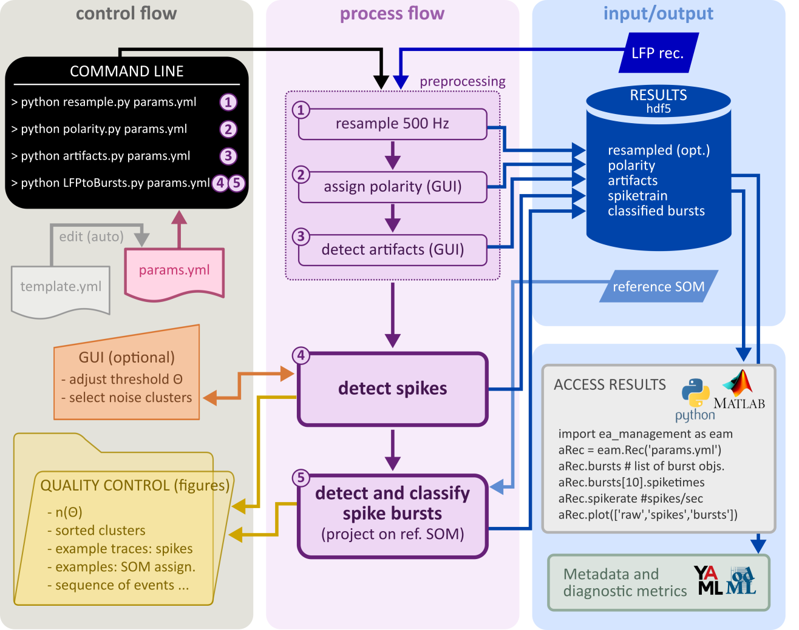

Detecting epileptiform activity with PEACOC¶
PEACOC stands for Patterns of Epileptiform Activity: a COntinuum-based Classification. It is s a tool that allows you to automatically detected and classify epilepitiform activity (EA) patterns. It transforms a local field potential (LFP) recording into a sequence of classified spike bursts and solitary spikes. The tool is python-based and you can execute it via the command-line.
The EA patterns PEACOC identifies are:
high-load bursts, these comprise large behavioral seizures and paroxysmal and seizure-like activity (e.g. high-voltage
sharp waves and hyperparoxysmal discharges)
medium-load bursts, a category bridging the continuum between high-load and low-load bursts
low-load bursts, which are looser trains of epileptiform spikes
solitary spikes, i.e. epileptiform spikes that are not part of a burst
Three major analysis steps are involved: I) preprocessing (resampling, assigning the polarity, semiautomatic artifact detection), II) transforming the LFP into a train of epileptiform spikes, and III) transforming the spike train into a sequence of classified spike bursts.
{kind=link}
The tool was originally developed for the intrahippocampal kainate mouse model, but we have seen promising results for other animal models of epilepsy as well. It has been used in several publications, but you will find the method best described in Heining et al. (2021)_.
In this documentation you will learn how to set everything up, set the parameters, run the preprocessing and the actual analyses, harvest the results, and retrieve metadata and diagnostic metrics. You can download the example data and the files successively generated in this tutorial from here_. If can also download a pdf-version_ of this documentation.
Todo
Make a link to Heining et al. 2021 once the paper is out.
Make a link to the tutorial data file.
Make a link to the pdf.
Todolist¶
Todo
Link to the paper_
(The original entry is located in /home/weltgeischt/workspace/PEACOC_doc/LFP_to_bursts.rst, line 57.)
Todo
paper_ link
(The original entry is located in /home/weltgeischt/workspace/PEACOC_doc/access_results.rst, line 103.)
Todo
Make a link to Heining et al. 2021 once the paper is out.
Make a link to the tutorial data file.
Make a link to the pdf.
(The original entry is located in /home/weltgeischt/workspace/PEACOC_doc/index.rst, line 45.)
Todo
Links for paper_Figure XXX_ and paper_, in the whole section
(The original entry is located in /home/weltgeischt/workspace/PEACOC_doc/output.rst, line 201.)
Todo
Make a link to download this example .smr file_.
(The original entry is located in /home/weltgeischt/workspace/PEACOC_doc/setting_parameters.rst, line 134.)